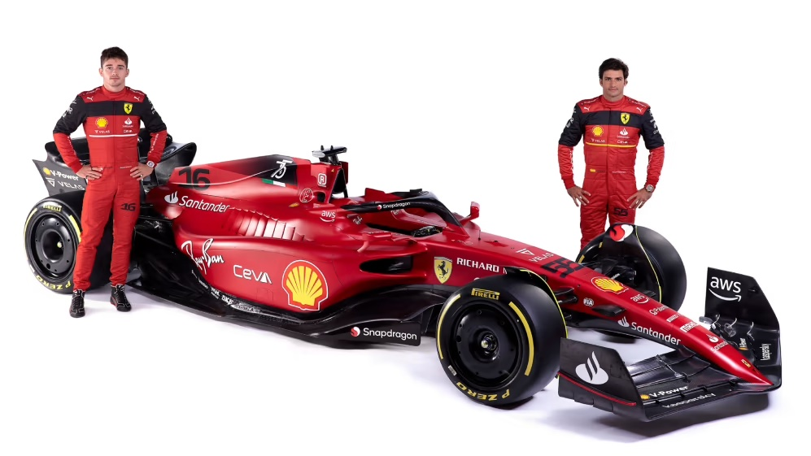
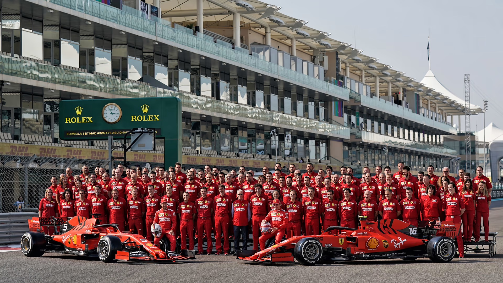

Formula 1 is a motorsport that demonstrates automotive engineering and speed. Ferrari is a Italian automaker who has a great reputation for creating automobiles. Ferarri F1 was founded in 1929 by Enzo Ferrari and started to race in 1950. The F1 team beholds great records as well as many achievments with their drivers and great team.
Ferrari's team has achieved numerous victories and championships, becoming a legendary and iconic name in the world of motorsports. The red color of Ferrari F1 cars is iconic and helps it become immediately recognizable on the race track. The two drivers are currently Carlos Sainz and Charles Leclerc.
 | Year | Championship Wins |
|---|---|
| 2000 | Constructors' Championship |
| 2004 | Constructors' Championship and Drivers' Championship, Won by Legendary Michael Schumacher |
| 2007 | Constructors' Championship and Drivers' Championship, Won by Kimi Räikkönen |
| 2008 | Constructors' Championship |
Learn more abouut the Ferrari F1 on their official website: Ferrari F1 Official Website
Find out more information of Ferrari F1 from the official Formula 1 website: Formula 1 Official Website